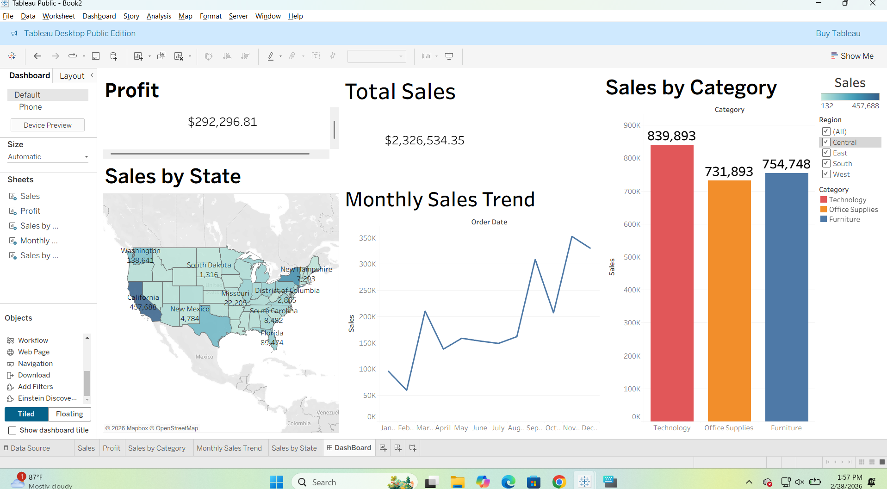
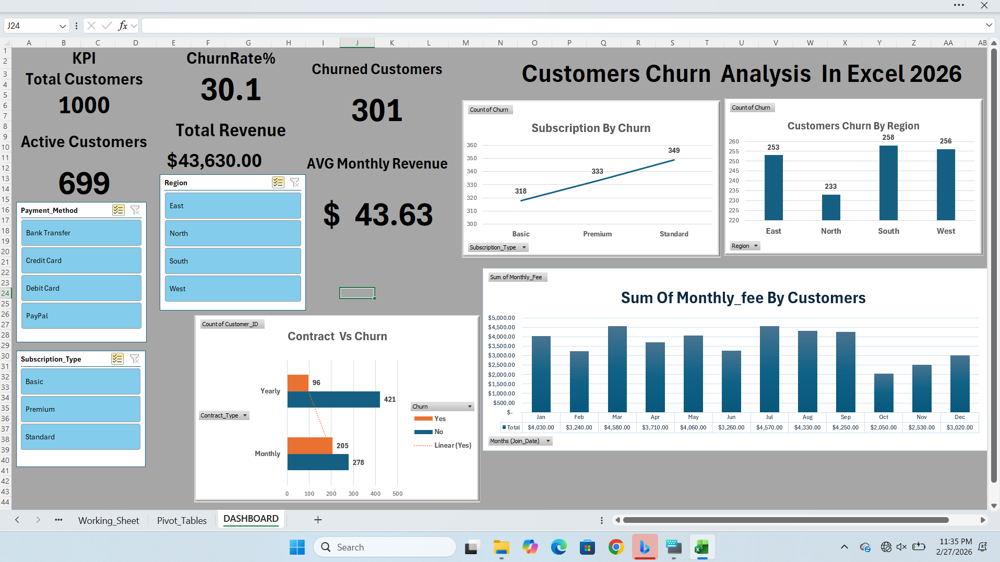
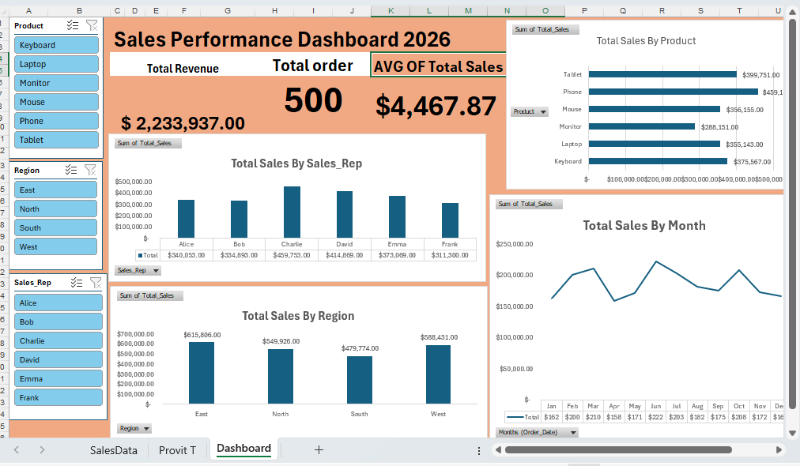
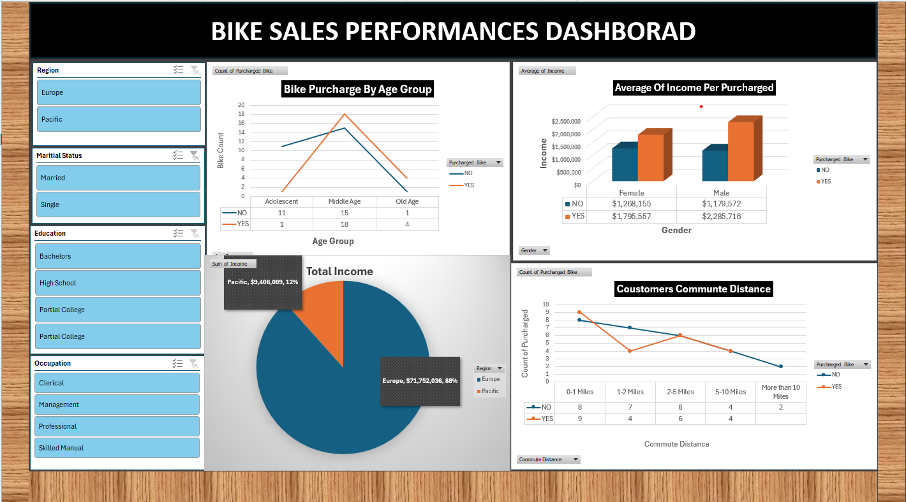
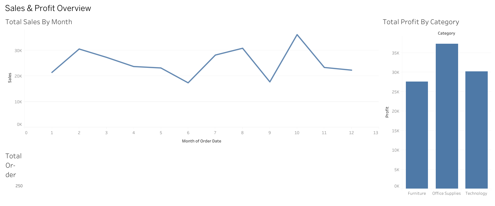
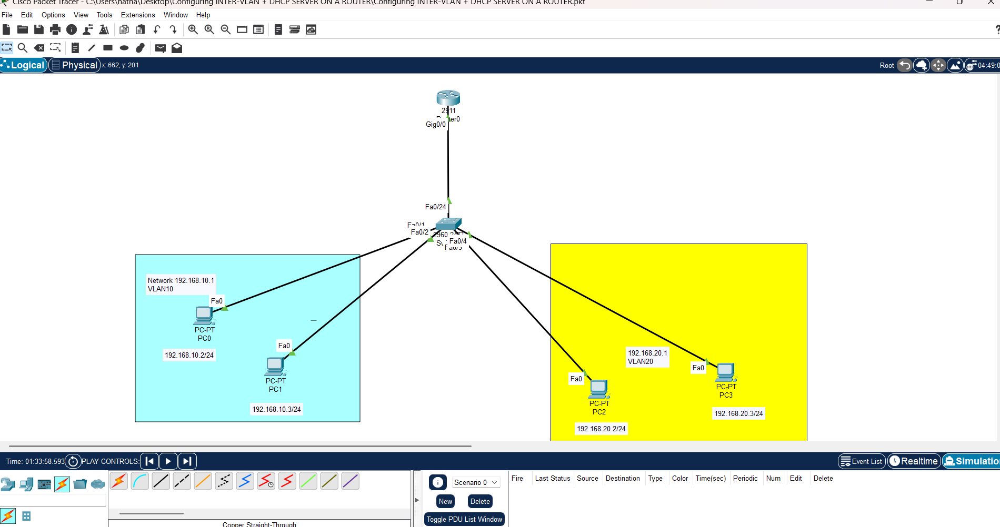
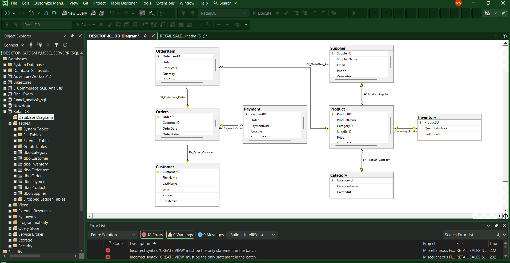
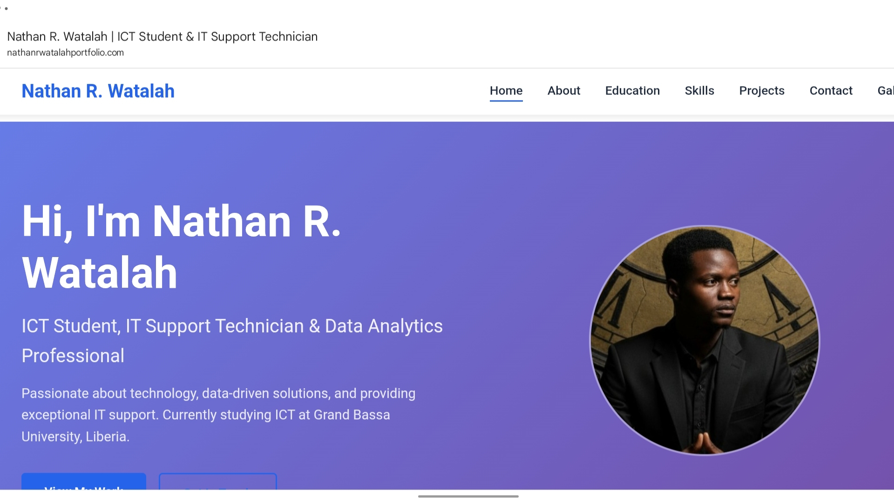
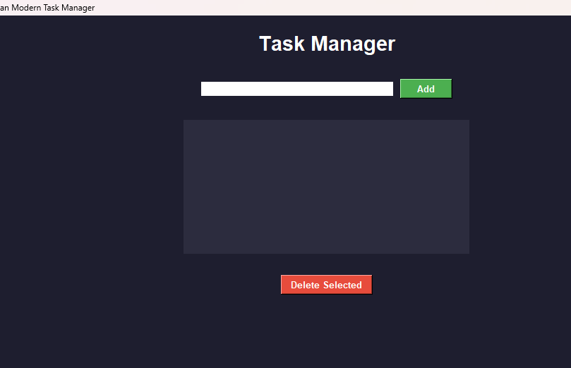

NETWORK & SYSTEMS · IT SUPPORT · MONROVIA, LIBERIA
I’m Nathan R. Watalah — an Information Technology student focused on network and system administration.
I’m studying Information Technology at Starz University in Monrovia, Liberia, with an emphasis on network and system administration. I also study database management as part of my coursework and enjoy working with databases.
I’m Nathan R. Watalah, an Information Technology student and IT support technician living in Monrovia, Liberia. I enjoy troubleshooting technology challenges, supporting users, and building reliable computer systems.
I transferred to Starz University, where I’m studying Information Technology with an emphasis on network and system administration. I expect to graduate in November 2028, and I’m building practical experience through coursework and hands-on projects.
My primary focus is network and system administration. I also study database management at university, and I especially enjoy designing databases and working with SQL.
Featured projects
Completed certificates and diplomas
Emphasis in Network & System Administration
Starz University, Monrovia, Liberia
Currently Pursuing · Expected Graduation: November 2028
Studying information technology with a focus on network infrastructure, system administration, and supporting reliable computer systems.
Alison Online Learning
Completed 2025
Professional training in technical troubleshooting, hardware maintenance, operating systems, and IT support best practices.
Alison Online Learning
Completed 2026
Advanced certification focused on system configuration, network support, and resolving real-world technical issues.
Google · Coursera
Course Certificate
Coursework in foundational technical support, troubleshooting, and customer service.
UniAthena Online Learning Platform
Completed 2025
Comprehensive training in SQL database management, query writing, relational database design, and optimization, from beginner to advanced topics.
NonprofitReady
Completed 2025
Training in leadership principles for nonprofit and community-focused work.
DisasterReady
Completed 2025
Introduction to monitoring, evaluation, accountability, and learning (MEAL).
A selection of dashboard, networking, database, and development projects. Open a project to see its overview and tools.
Showing all 9 projects
No projects match your search. Try another term or category.

TABLEAU · SALES DASHBOARD
Compares sales and profit across regions using an interactive Tableau dashboard. Charts and maps make it easier to explore geographic patterns and identify areas for closer analysis.

EXCEL · CUSTOMER RETENTION
Explores customer attrition with Excel pivot tables, charts, and slicers. The dashboard helps compare churn patterns and investigate where retention efforts may be useful.

EXCEL · SALES REPORTING
Brings key sales measures, charts, and slicers into one Excel dashboard. Interactive filters make it easier to compare performance and explore trends in the project data.

Uses Excel charts and interactive filters to explore bike sales performance and customer purchasing patterns. Viewers can compare trends across the project data.

Combines retail sales and profit measures in a Tableau dashboard. Visual comparisons help viewers examine performance differences and choose areas for further investigation.

Configures VLAN segmentation and DHCP in a simulated Cisco Packet Tracer network. Demonstrates how network segments and automatic IP address assignment can be set up and checked in a small enterprise-style environment.

Models retail sales and inventory data in SQL Server. The project uses a relational schema, T-SQL queries, and stored procedures to demonstrate structured data management.

A responsive portfolio built with HTML, CSS, and JavaScript. It brings together project work, skills, and contact information, with a Formspree-powered contact form.

A desktop task manager built with Python and Tkinter. Users can create, edit, delete, and categorize tasks, with SQLite used to store task data.
Have a technical challenge, database project, or opportunity in mind? I’d be glad to hear from you.